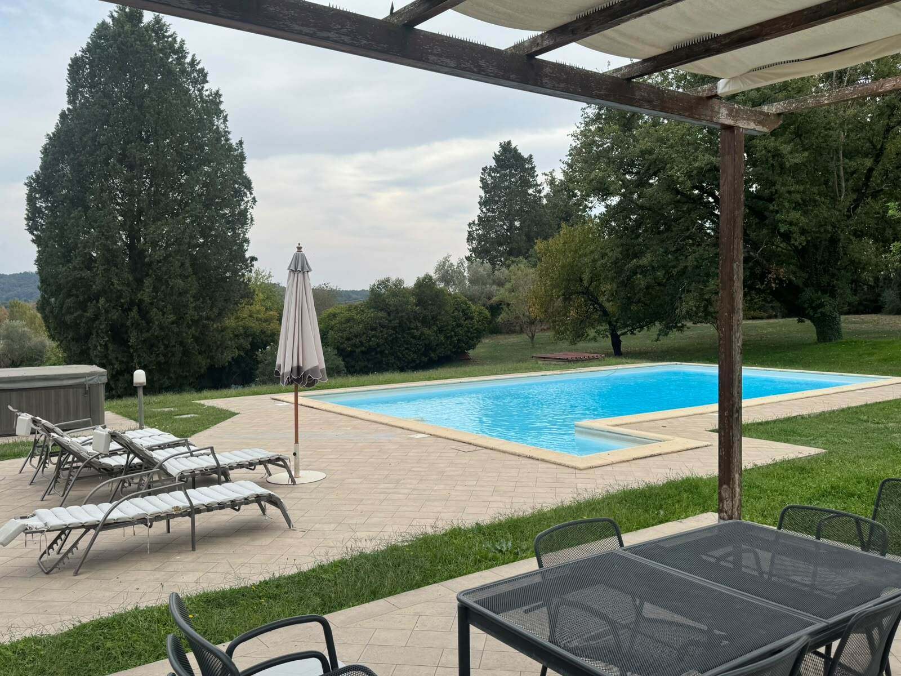
Un posto sicuro per i tuoi cari, nel verde di Campagnano
Comunità alloggio per anziani in una villa su un piano. Assistenza H24, un grande giardino e un'atmosfera di famiglia.
Una casa, non una struttura
Il Giardino del Cuore è una comunità alloggio per anziani a Campagnano di Roma, a nord di Roma. Accogliamo pochi ospiti alla volta. Così conosciamo ognuno per nome, abitudini e gusti.
Organizziamo la giornata intorno alla persona. Ogni ospite ha un progetto personalizzato per il suo benessere fisico e mentale.
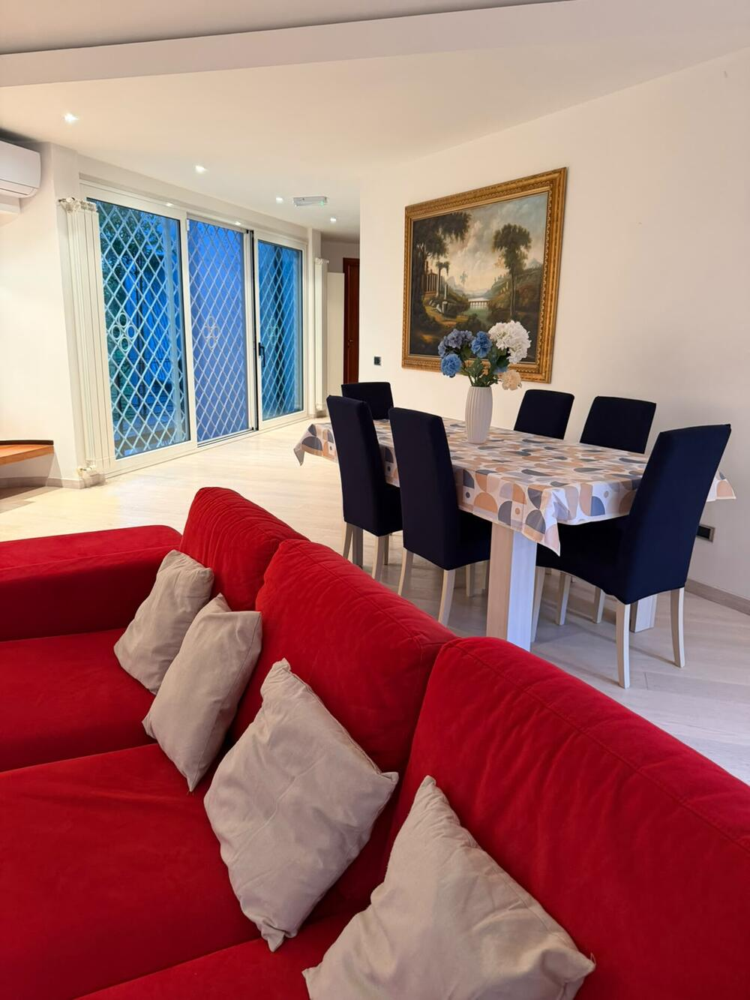
Cosa offriamo ogni giorno
Assistenza H24
Personale presente giorno e notte, tutti i giorni dell'anno.
Personale qualificato
OSS, infermiera ed educatore professionale. Operatrici empatiche e solari.
Camere luminose
Camere doppie grandi, con vista sul giardino. Quattro bagni per gli ospiti.
Cucina varia
Un menù che cambia per soddisfare anche i palati più esigenti.
Attività insieme
Attività giornaliere a rotazione, gite e uscite sul territorio.
Soggiorni flessibili
Soggiorni brevi, anche di sollievo per le famiglie, oppure a lungo termine.
Guarda dove vivrai
Una villa su un piano unico, immersa nel verde. Tocca una foto per ingrandirla.
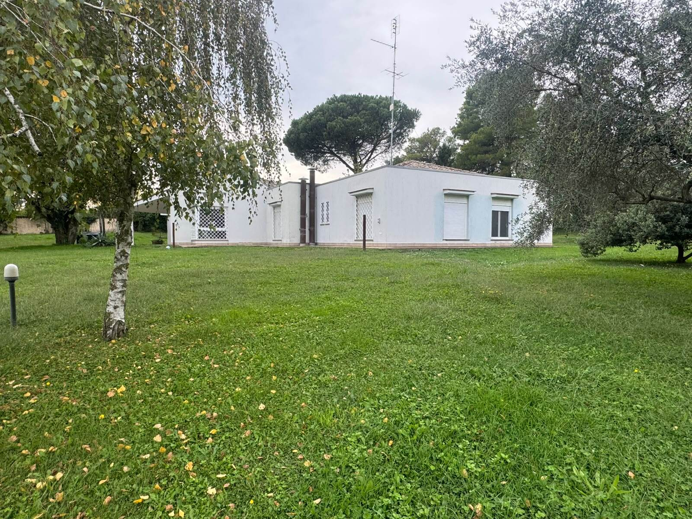
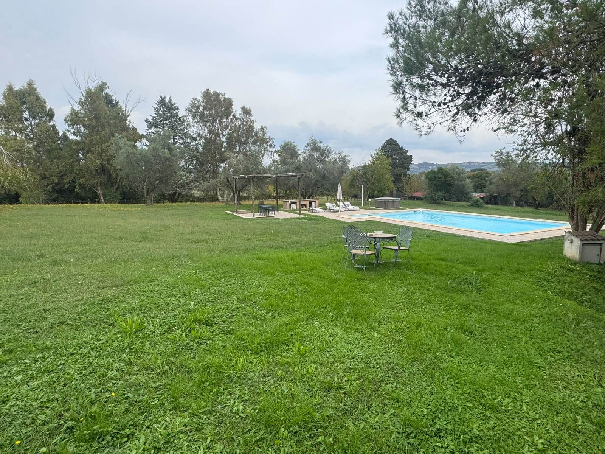
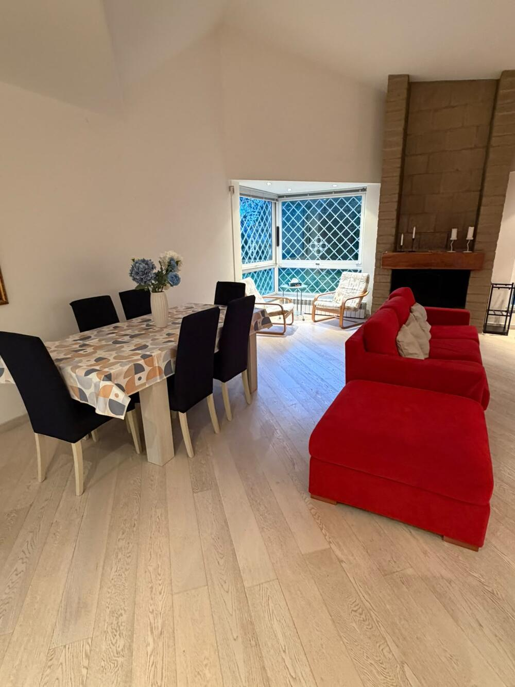
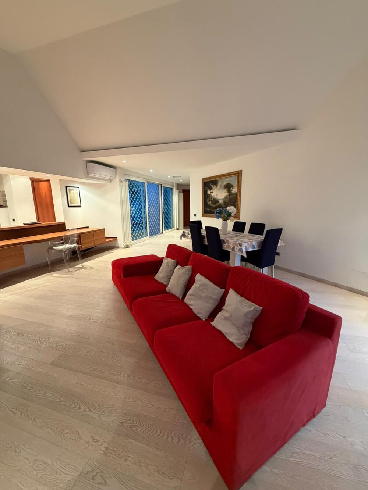
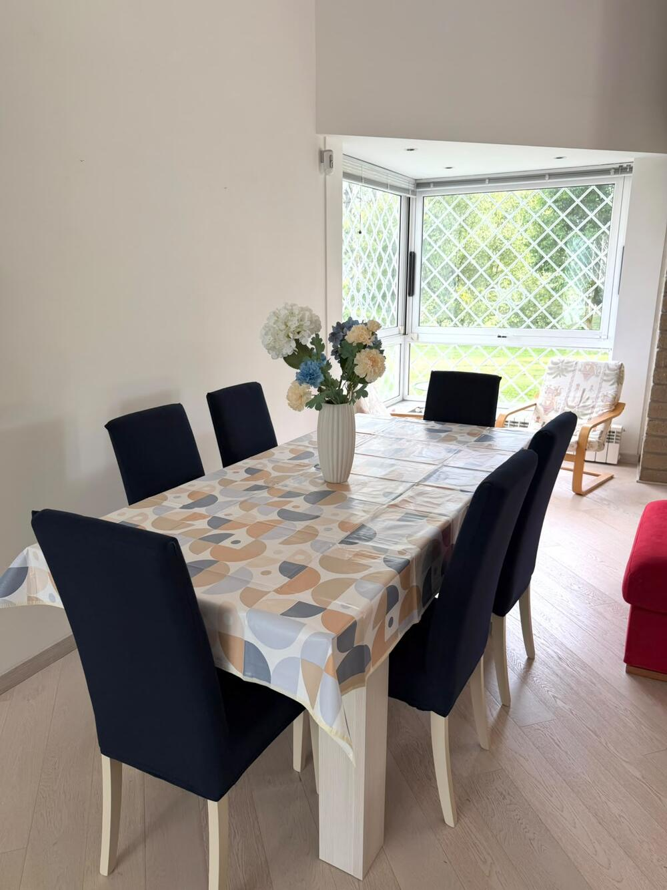
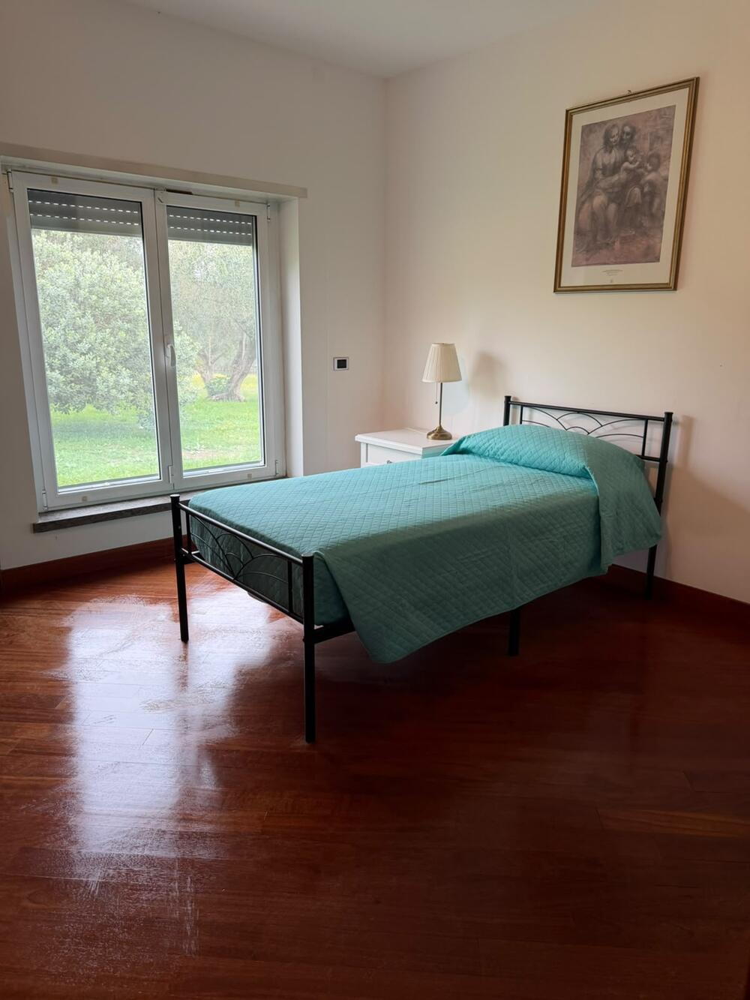
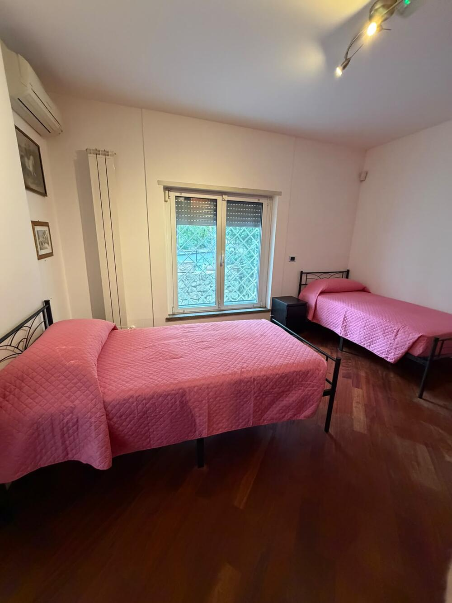
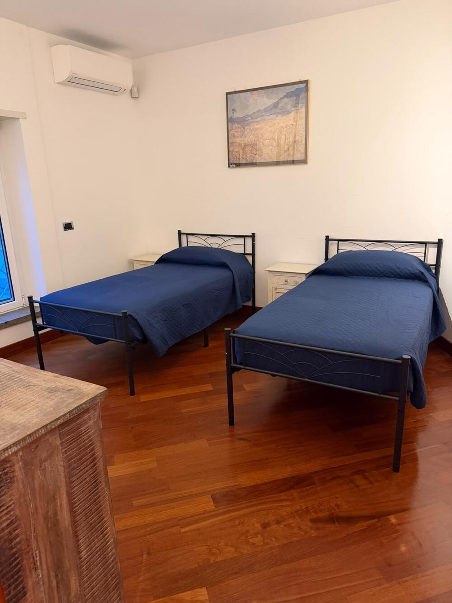
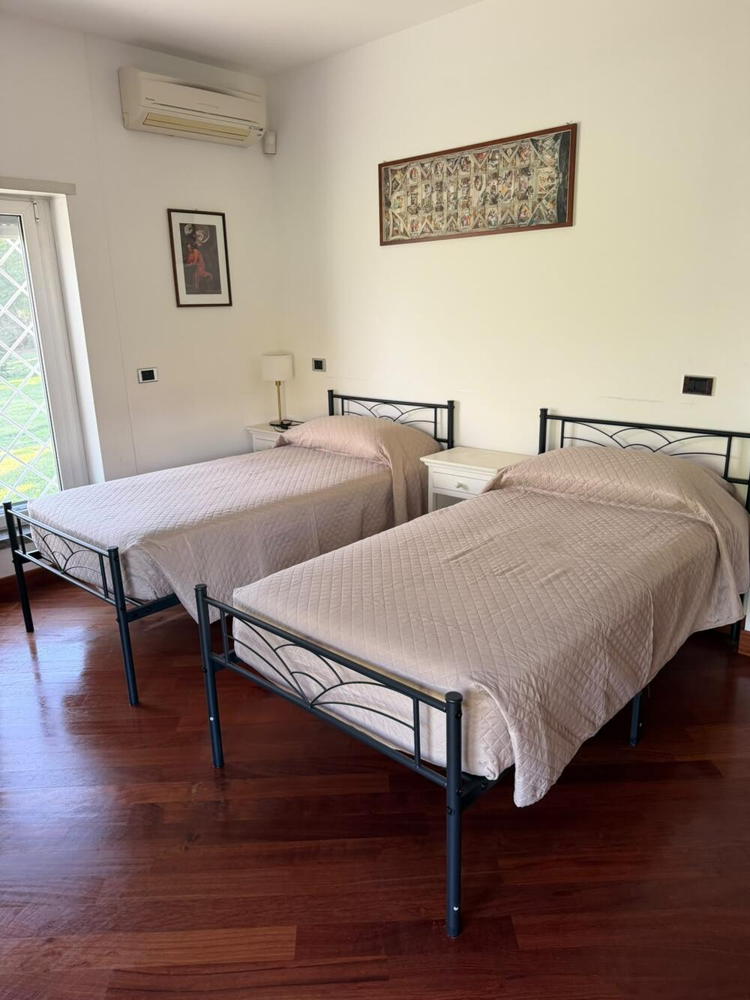
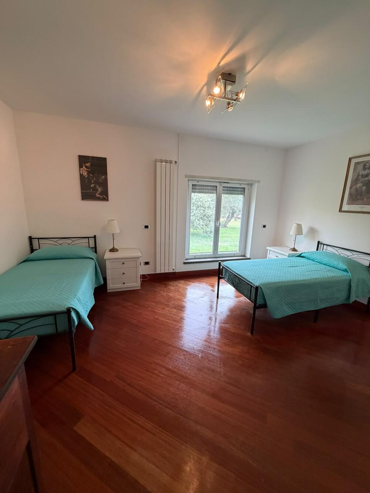
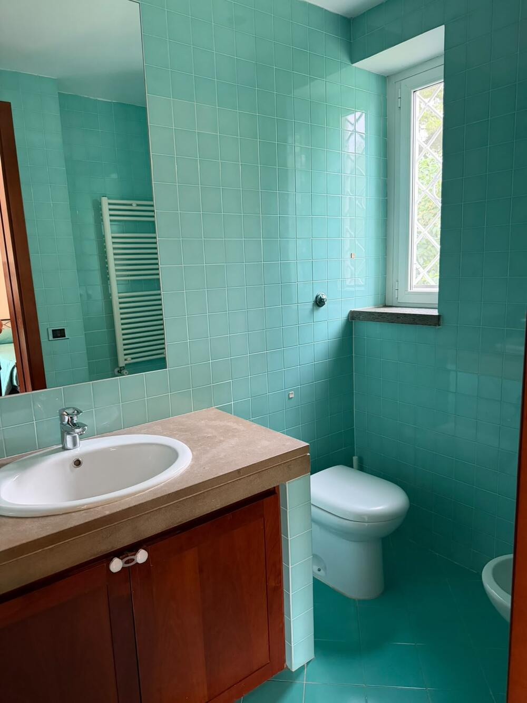
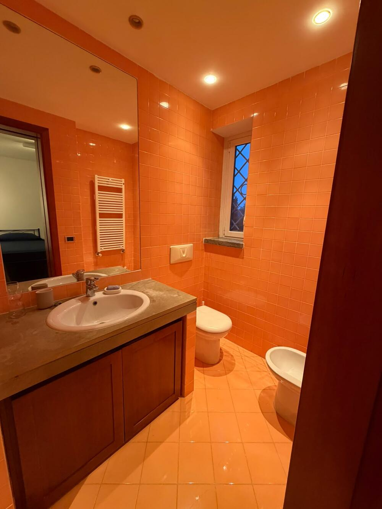
Ritmi tranquilli, sempre in compagnia
Un esempio di giornata. Gli orari si adattano a ogni ospite.
Le parole delle famiglie
«Qui va la frase vera di un familiare.»
DA RACCOGLIERE · nome e iniziale, con consenso«Qui va una seconda testimonianza vera.»
DA RACCOGLIERE · oppure le recensioni di GooglePrenota una visita
Lascia nome e telefono. Ti richiamiamo noi. Il messaggio parte su WhatsApp.
Dove siamo
Strada della Bossetta 5
00063 Campagnano di Roma (RM)
393 481 6677
Rispondiamo tutti i giorni.
Siamo vicini a Formello, Sacrofano, Magliano Romano, Mazzano Romano, Castelnuovo di Porto, Morlupo e Nepi. Facile da raggiungere da Roma nord e dalla Cassia.